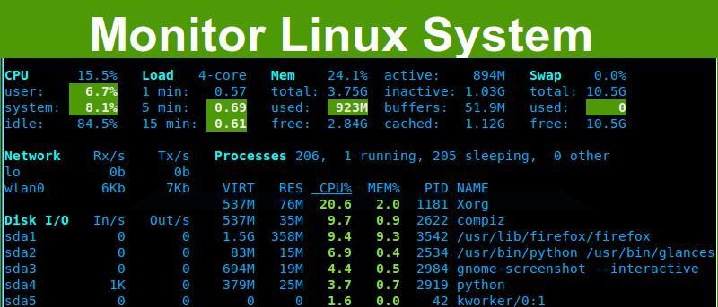

编译自：https://www.maketecheasier.com/glances-monitor-system-ubuntu/
作者： Hitesh Jethva
原创：LCTT https://linux.cn/article-6882-1.html
译者： bianjp
本文地址：https://linux.cn/article-6882-1.html

Glances 是一个用于监控系统的跨平台、基于文本模式的命令行工具。它是用 Python 编写的，使用 psutil 库从系统获取信息。你可以用它来监控 CPU、平均负载、内存、网络接口、磁盘 I/O，文件系统空间利用率、挂载的设备、所有活动进程以及消耗资源最多的进程。Glances 有很多有趣的选项。它的主要特性之一是可以在配置文件中设置阀值（careful、warning、critical），然后它会用不同颜色显示信息以表明系统的瓶颈。
Glances 在 Ubuntu 的软件仓库中，所以安装很简单。执行下面的命令安装 Glances：
sudo apt-get install glances
（LCTT 译注：若安装后无法正常使用，可考虑使用 pip 安装/升级 glances：sudo pip install --upgrade glances）
安装完成后，可以执行下面的命令启动 Glances：
glances
你将看到类似下图的输出：
glances monitor system output
要退出 Glances 终端，按 ESC 键或 Ctrl + C。
默认情况下，时间间隔（LCTT 译注：显示数据刷新的时间间隔）是 1 秒，不过你可以在从终端启动 Glances 时自定义时间间隔。
要把时间间隔设为 5 秒，执行下面的命令：
glances -t 5
Glances 中不同颜色的含义：
绿色：正常（OK）蓝色：小心（careful）紫色：警告（warning）红色：致命（critical）默认设置下，Glances 的阀值设置是：careful=50，warning=70，critical=90。你可以通过 “/etc/glances/” 目录下的默认配置文件 glances.conf 来自定义这些阀值。
Glances 提供了很多快捷键，可以在它运行时用来查找输出信息。
下面是一些常用的热键列表：
m : 按内存占用排序进程p : 按进程名称排序进程c : 按 CPU 占用率排序进程i : 按 I/O 频率排序进程a : 自动排序进程d : 显示/隐藏磁盘 I/O 统计信息f : 显示/隐藏文件系统统计信息s : 显示/隐藏传感器统计信息y : 显示/隐藏硬盘温度统计信息l : 显示/隐藏日志n : 显示/隐藏网络统计信息x : 删除警告和严重日志h : 显示/隐藏帮助界面q : 退出w : 删除警告记录你也可以使用 Glances 监控远程系统。要在远程系统上使用它，使用下面的命令：
glances -s
你会看到类似下面的输出：
glances monitor remote system server
如你所见，Glances 运行在 61209 端口。
现在，到远程机器上执行下面的命令以连接到指定 IP 地址的 Glances 服务器上。假设 192.168.1.10 是你的 Glances 服务器 IP 地址。
glances -c -P 192.168.1.10
对于每个 Linux 系统管理员来说，Glances 都是一个非常有用的工具。使用它，你可以轻松、高效地监控 Linux 系统。如果你有什么问题，自由地评论吧。
via: https://www.maketecheasier.com/glances-monitor-system-ubuntu/
作者：Hitesh Jethva 译者：bianjp 校对：wxy
编译自：https://www.maketecheasier.com/glances-monitor-system-ubuntu/
作者： Hitesh Jethva
原创：LCTT https://linux.cn/article-6882-1.html
译者： bianjp
本文由 LCTT 原创翻译，Linux中国首发。也想加入译者行列，为开源做一些自己的贡献么？欢迎加入 LCTT！
翻译工作和译文发表仅用于学习和交流目的，翻译工作遵照 CC-BY-NC-SA 协议规定，如果我们的工作有侵犯到您的权益，请及时联系我们。
欢迎遵照 CC-BY-NC-SA 协议规定转载，敬请在正文中标注并保留原文/译文链接和作者/译者等信息。
文章仅代表作者的知识和看法，如有不同观点，请楼下排队吐槽 :D
Linux.CN © 2003-2016 Linux中国 | Powered by DX | 图片存储于七牛云存储
京ICP备05083684号-1 京公网安备110105001595
服务条款 | 除特别申明外，本站原创内容版权遵循 CC-BY-NC-SA 协议规定
分享到微信朋友圈
打开微信，点击底部的“发现”，
使用“扫一扫”将网页分享至朋友圈。